机械臂视觉标定系统使用手册¶
目录¶
- 1. 基础知识介绍
- 1.1 什么是相机标定
- 1.2 什么是手眼标定
- 2. 准备工作
- 3. 相机标定操作指南
- 3.1 单目相机标定
- 3.2 双目相机标定
- 4. 手眼标定操作指南
- 4.1 标定前准备
- 4.2 执行手眼标定
- 4.3 验证标定精度
- 5. 完整标定流程演示
- 6. 常见问题解答
1. 基础知识介绍¶
1.1 什么是相机标定？¶
相机标定是确定相机内部参数和畸变系数的过程，这些参数对于准确的计算机视觉应用至关重要。
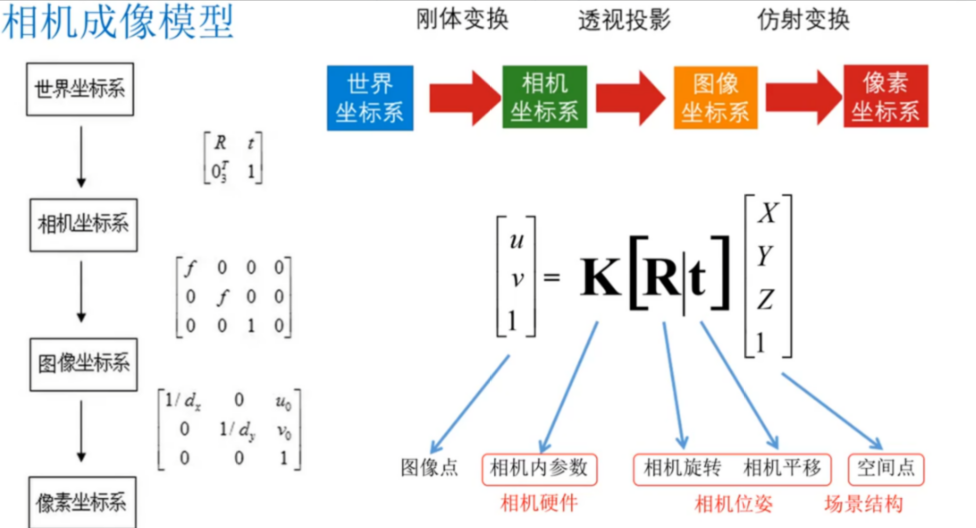
为什么需要相机标定？¶
- 消除镜头畸变：相机镜头会产生径向和切向畸变，影响图像的准确性
- 获取相机内参：包括焦距、主点位置等，用于3D重建和位置计算
- 提高测量精度：标定后的相机可以准确测量物体的实际尺寸和位置
相机标定需要获取的参数：¶
- 内参矩阵：包含焦距(fx, fy)和主点坐标(cx, cy)
- 畸变系数：径向畸变(k1, k2, k3)和切向畸变(p1, p2)
- 图像分辨率：相机的像素尺寸
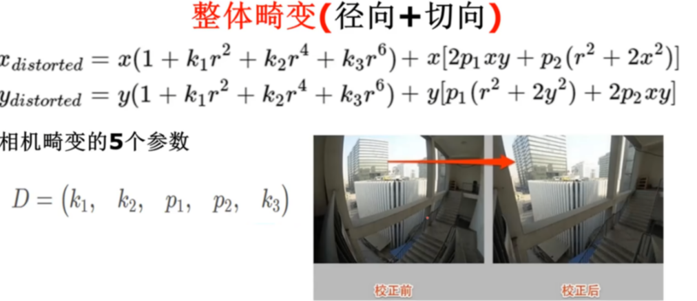
1.2 什么是手眼标定？¶
手眼标定是确定相机与机械臂末端执行器之间空间变换关系的过程。
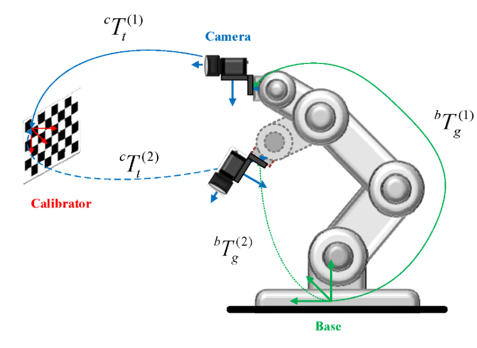
为什么需要手眼标定？¶
- 坐标系统一：将相机坐标系与机械臂坐标系建立联系
- 精确抓取：使机械臂能够准确抓取相机看到的物体
- 位置转换：将图像中的像素坐标转换为机械臂的世界坐标
手眼标定的类型：¶
分Eye-in-Hand（眼在手）和Eye-to-Hand（眼在外）两种类型
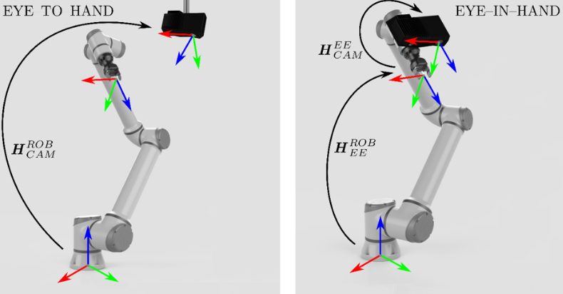
两种系统的对比
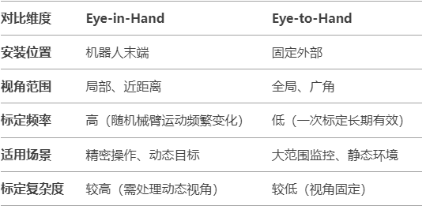
本系统采用Eye-in-Hand（眼在手上）配置： - 相机固定安装在机械臂末端 - 相机随机械臂一起运动 - 需要标定相机相对于末端执行器的位置关系
⚠️ 重要说明：本系统使用双目相机的右侧相机进行手眼标定
1.3 手眼标定的算法计算流程¶
本文档主要介绍如何操作，算法暂不展示
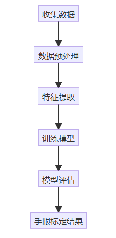
2. 准备工作¶
2.1 硬件准备¶
购买本项目机械臂一般都配齐所需设备
- ✅ 双目相机（分辨率1280×480，左右各640×480）
- ✅ 标定板（棋盘格标定板）
- ✅ 机械臂（6轴，已连接并能正常控制）
- ✅ 上位机软件已安装并运行
2.2 标定板准备¶
标定板规格要求： - 默认尺寸：8×5内角点（即9×6个方格） - 方格大小：30mm（可根据实际测量调整） - 打印要求： - 使用哑光纸打印，避免反光 - 贴在平整的硬板上，确保无弯曲 - 黑白对比度要清晰 - 4A纸大小
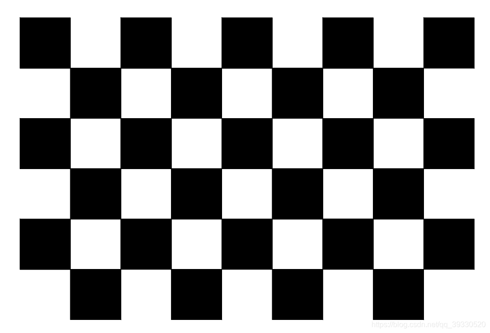
2.3 环境要求¶
- 光照均匀，避免强光直射
- 避免背景杂乱，影响棋盘格检测
- 确保标定板在相机视野内完整可见
3. 相机标定操作指南¶
单目标定的结果用于手眼标定跟视觉抓取
双目标定的结果用于深度估计
3.1 单目相机标定¶
步骤1：打开相机标定工具¶
- 在主界面点击菜单栏的 "工具" → "相机标定"
- 相机标定窗口将会打开
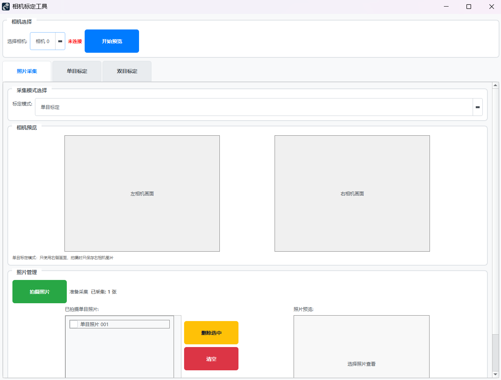
步骤2：选择相机并开始预览¶
- 在 "相机选择" 区域，选择相机编号（通常为相机0）
- 点击 "开始预览" 按钮
- 此时应该能看到相机画面，双目相机会显示左右两个画面
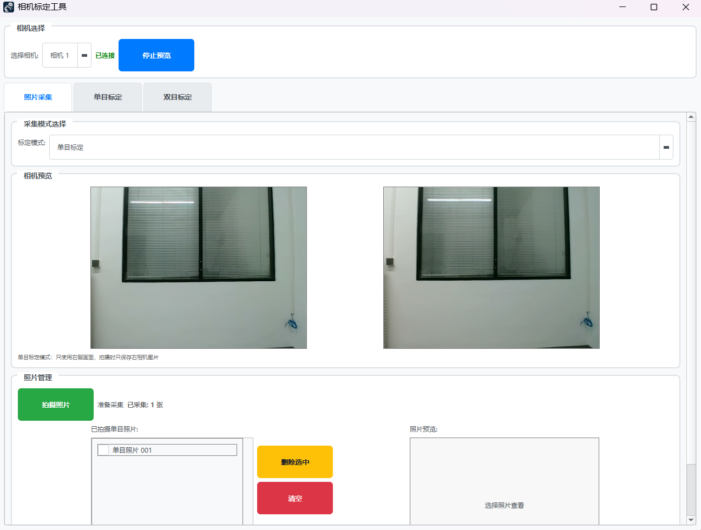
步骤3：配置对应采集参数¶
- 点击 "照片采集" 标签页
- 在 "采集模式选择" 中选择 "单目标定"
- 在 "单目标定" 设置标定参数：
- 相机模型：选择"标准针孔模型"或"鱼眼模型"（根据相机类型）
- 棋盘格宽度：8（内角点数）
- 棋盘格高度：5（内角点数）
- 方格尺寸：30mm（根据实际测量值）
- 此时界面提示会显示："单目标定参数已应用"
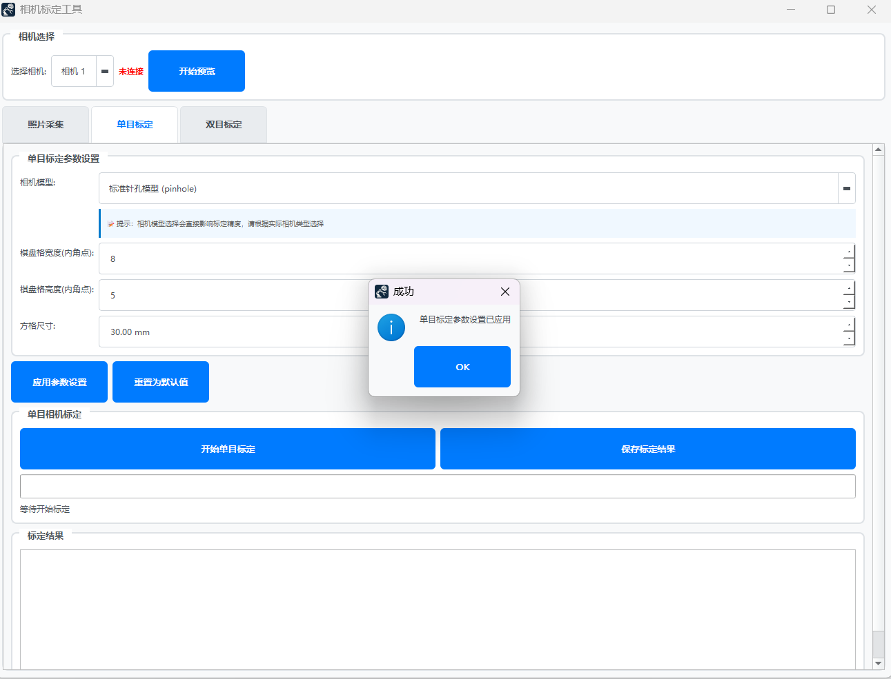
步骤4：拍摄标定照片¶
- 将标定板出现在相机视野内不同位置和角度，
相机不动，标定板动 - 当系统检测到完整的棋盘格时，点击 "拍摄照片" 按钮
- 系统会自动检测棋盘格：
- ✅ 绿色提示："单目照片已自动保存 - 检测到棋盘格"
- ❌ 红色提示："未检测到棋盘格 - 照片未保存"
- 重复拍摄至少20-30张不同角度的照片，包括：
- 不同距离（近、中、远）
- 不同角度（倾斜、旋转）
- 覆盖整个视野范围
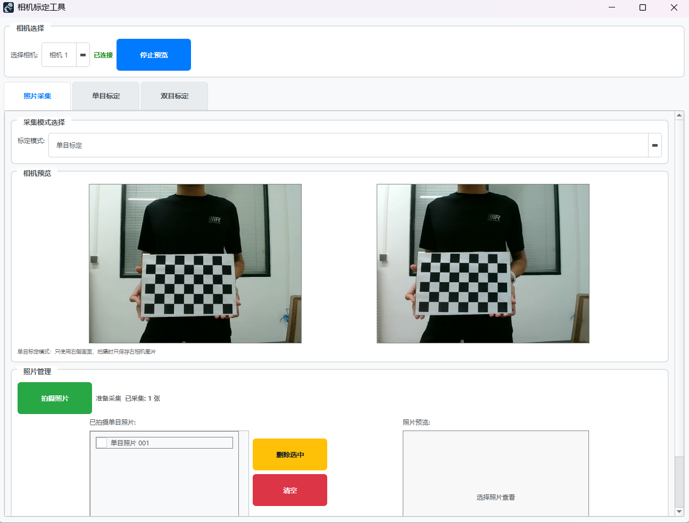
步骤5：执行单目标定¶
- 切换到 "单目标定" 标签页
- 点击 "应用参数设置" 按钮
- 点击 "开始单目标定" 按钮
- 等待标定完成，查看标定结果
步骤6：保存标定结果¶
- 检查标定精度（RMS误差应小于1.0,越小越好）
- 点击 "保存标定结果" 按钮
- 结果将保存到
config/calibration_parameter.json文件
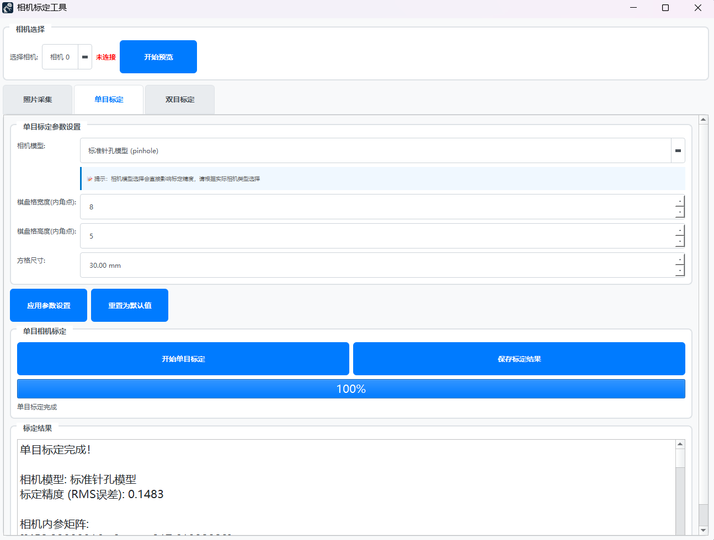
3.2 双目相机标定¶
步骤1-3：同单目标定¶
前三步操作与单目标定相同
步骤4：切换到双目模式¶
- 在 "采集模式选择" 中选择 "双目标定"
- 此时界面提示："双目标定模式：显示左右两个画面"
步骤5：拍摄双目标定照片¶
- 将标定板放置在左右相机共同视野内
- 确保标定板在左右画面中都完整可见
- 当系统同时检测到左右画面的棋盘格时，点击 "拍摄照片"
- 系统提示："双目照片已自动保存 - 左右都检测到棋盘格"
- 拍摄至少20-30对照片
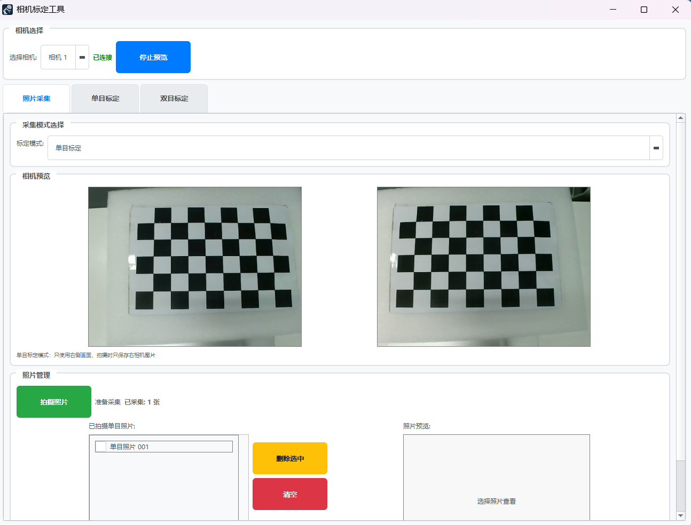
步骤6：执行双目标定¶
- 切换到 "双目标定" 标签页
- 设置与单目相同的标定参数
- 点击 "开始双目标定" 按钮
- 等待标定完成
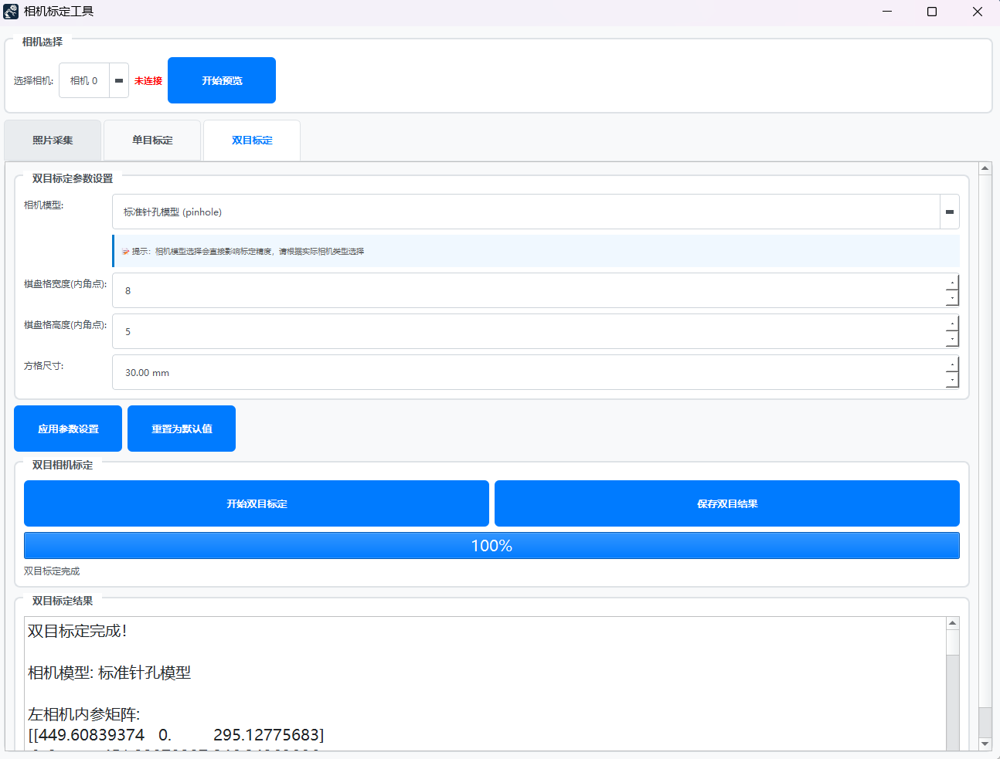
步骤7：保存双目标定结果¶
- 点击 "保存双目结果" 按钮
- 结果包含左右相机的内参、畸变系数以及相对位置关系
4. 手眼标定操作指南¶
4.1 标定前准备¶
确认相机标定已完成¶
- 确保已完成相机标定（单目或双目）
- 检查
config/calibration_parameter.json文件存在 - 文件中应包含相机内参和畸变系数
连接机械臂¶
- 确保机械臂已正确连接到上位机
- 在主界面完成电机连接
- 确认所有6个关节都能正常控制
4.2 采集标定位置¶
手眼标定的结果非常看重标定的位置
1. 打开 示教器 ，同时 打开视觉抓取的摄像头，用于观察该标定位置是否包含整个标定板
2. 将示教器切换到 工具模式(Tool Mode)
3. 示教器上的方向键(通常是摇杆或+X,-X,+Y,-Y,+2,-Z按钮)的含义变了:
- 要绕着工具Z轴旋转 (相机镜头朝向的轴)，你只需要找到并按住代表 RZ+或 RZ- 的旋转按钮。你会看到机器 人末端的J4,J5,J6关节会协同运动，以保持TCP位置不变，同时让整个未端工具(相机)绕着它自己的Z轴旋转。
- 要绕着工具Y轴旋转(左右摇头)，按住 R+或 RY-。
-
要绕着工具X轴旋转(上下点头)，按住 RX+或RX-。
-
每改变一次有效角度就进行保存位置
-
执行"大范围平移"
-
将示教器切换回 基座/世界模式(Base/World Mode)
-
使用方向键 +X，-X，+Y，-Y 等，将整个机械臂移动到工作空间中另一个不同的位置。
-
移动到位后，再切换回 工具模式 (Tool Mode)，重复
3中的旋转操作。
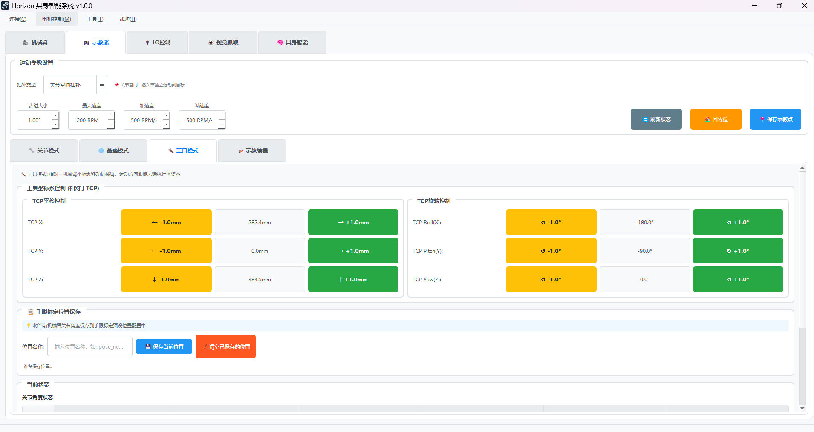
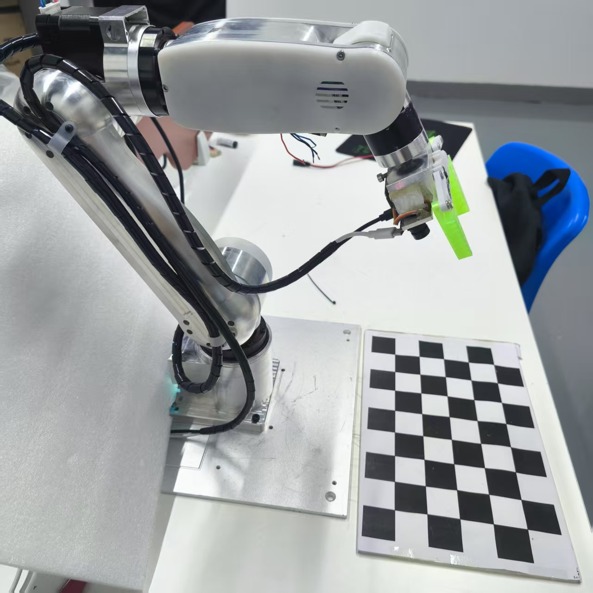
每一次的标定位置都需要标定板的完整出现
- 保存手眼标定位置
- 在 "工具模式" 下，点击 "保存当前位置" 按钮
- 保存的标定位置就会显示在 手眼标定的 "预设位置" 列表中
标定位置采集的一些建议
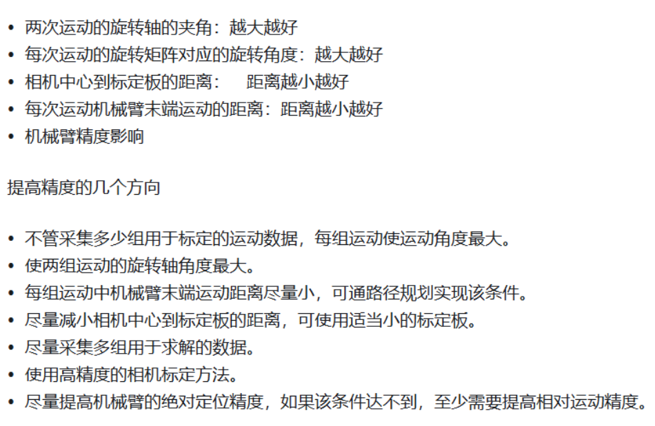
4.3 执行手眼标定¶
步骤1：打开手眼标定界面¶
- 在主界面找到 "手眼标定" 功能模块
- 点击进入手眼标定界面
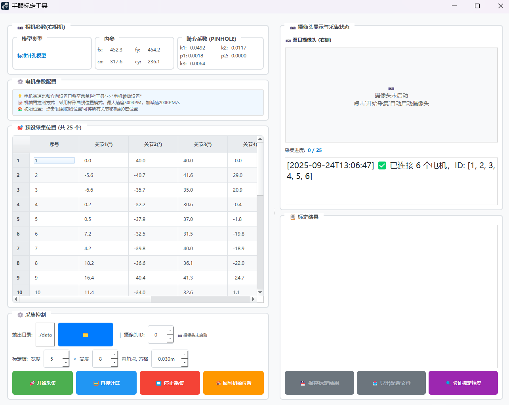
步骤2：检查系统状态¶
界面会自动显示： - 相机参数：显示已加载的右相机内参和畸变系数 - 预设位置：显示预加载的标定位置（强烈建议重新采集标定位置） - 电机状态：显示已连接的电机数量
步骤3：设置标定参数¶
- 输出目录：默认为
../data，可点击📁按钮更改 - 摄像头ID：通常为0
- 标定板参数：
- 宽度内角点：5（默认）
- 高度内角点：8（默认）
- 方格尺寸：0.03m（30mm）
⚠️ 注意：手眼标定的棋盘格参数可能与相机标定不同，请根据实际使用的标定板设置
步骤4：开始数据采集¶
- 将标定板放置在机械臂工作空间内的固定位置
- 确保标定板在整个采集过程中保持静止不动
- 点击 "🚀 开始采集" 按钮
- 系统将自动执行：
- 移动机械臂到第1个预设位置
- 等待5秒确保运动完成
- 拍摄标定板照片
- 记录机械臂末端位姿
- 重复以上步骤直到所有位置采集完成
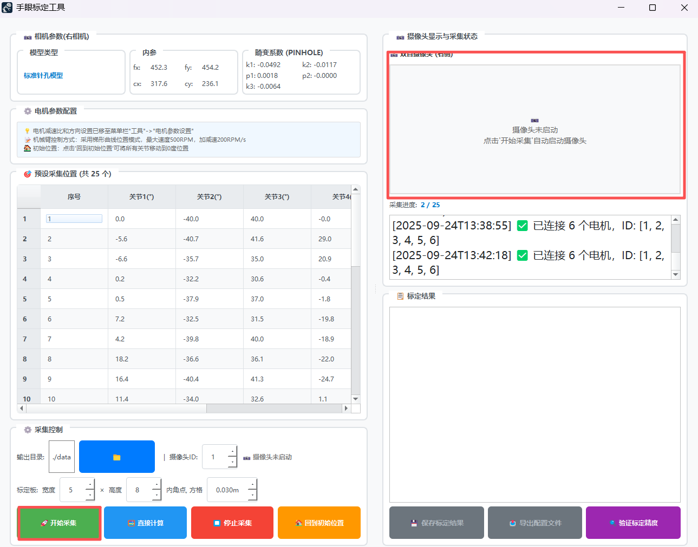
步骤5：查看标定结果¶
采集完成后，系统会自动计算并显示： - 旋转矩阵（Rotation Matrix） - 平移向量（Translation Vector） - 变换矩阵（RT_camera2end） - 标定参数信息
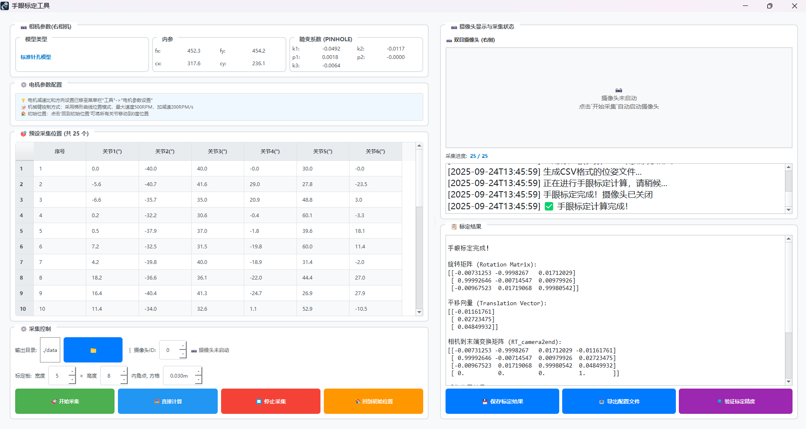
4.4 验证标定精度¶
步骤1：点击验证按钮¶
标定完成后，点击 "🔍 验证标定精度" 按钮 验证窗口会打开，显示： - 摄像头画面 - 测量控制面板 - 结果显示区域
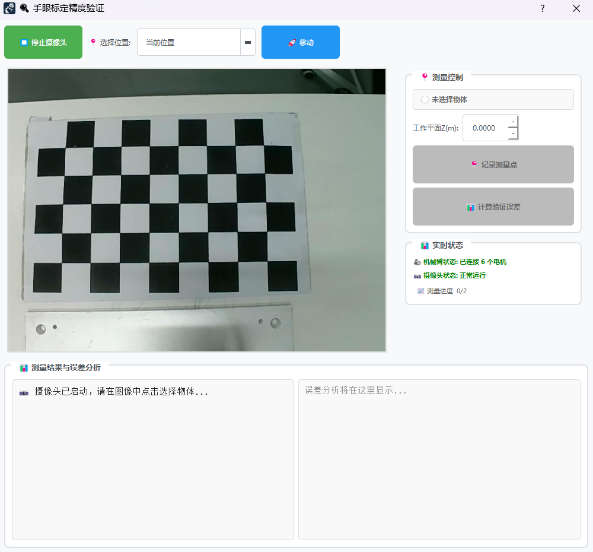
步骤2：执行精度验证¶
- 点击 "📷 启动摄像头"
- 在工作平面上放置一个易识别的物体（如标记点）
- 在摄像头画面中点击该物体选择像素位置
- 点击 "📍 记录测量点" 记录第1个测量点
- 使用位置控制器移动机械臂到另一个位置（
位置A或者位置B） - 在新位置再次点击同一物体
- 点击 "📍 记录第2个测量点"
- 点击 "📊 计算验证误差"
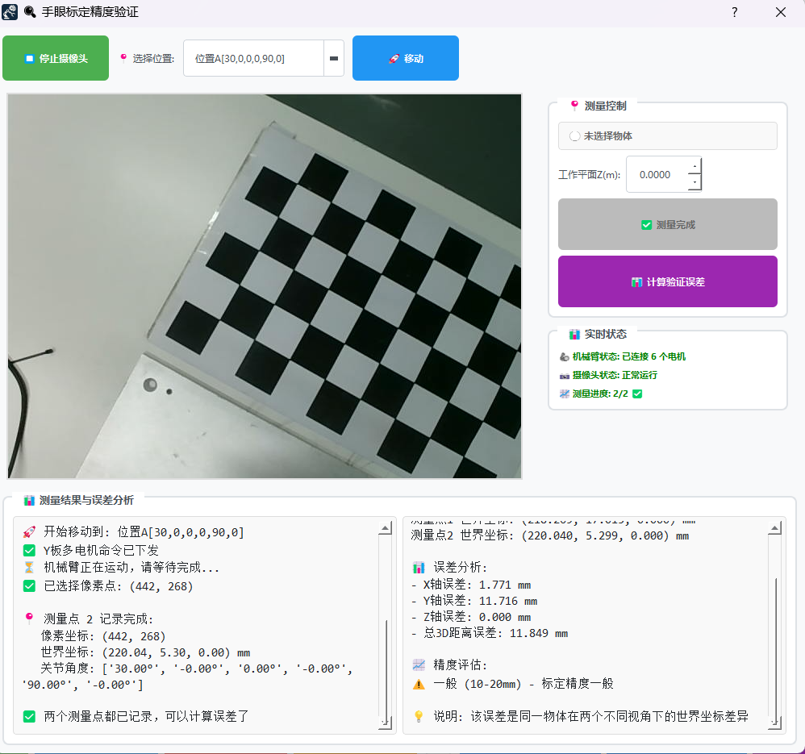
步骤3：查看验证结果¶
系统会显示： - 两个测量点的世界坐标 - X、Y、Z轴误差（mm） - 总3D距离误差（mm） - 精度评估： - ✅ 优秀（< 5mm） - ✅ 良好（5-10mm） - ⚠️ 一般（10-20mm） - ❌ 较差（> 20mm）
步骤4：保存标定结果¶
- 点击 "保存标定结果" 按钮
- 结果将保存到
config/calibration_parameter.json文件 - 系统提示："手眼标定结果已保存"
5. 精度验证操作指南¶
5.1 准备工作¶
确认手眼标定已完成¶
- 确保已完成手眼标定
- 检查
config/calibration_parameter.json文件存在 - 文件中应包含手眼标定结果
🎯 实际操作示例¶
第一阶段：相机标定（约15分钟）¶
- 启动软件 → 打开相机标定工具
- 选择单目标定 → 开始预览
- 拍摄20张照片 → 不同角度和距离
- 执行标定 → 检查RMS误差 < 1.0
- 保存结果 → 自动保存到配置文件
第二阶段：手眼标定（约20分钟）¶
- 连接机械臂 → 确认6个电机正常
- 放置标定板 → 固定在工作空间
- 开始采集 → 自动运行15-20个位置
- 等待完成 → 查看标定结果
- 保存结果 → 更新配置文件
第三阶段：精度验证（约5分钟）¶
- 打开验证窗口 → 启动摄像头
- 放置测试物体 → 在工作平面上
- 记录两个测量点 → 不同视角
- 计算误差 → 确认 < 10mm
- 完成标定 → 系统可用于视觉抓取
6. 常见问题解答¶
❓ Q1: 为什么检测不到棋盘格？¶
解决方案： - 检查光照是否均匀，避免反光 - 调整标定板距离，确保在焦距范围内，整个标定板完整出现在窗口 - 检查棋盘格参数设置是否正确
❓ Q2: 相机标定RMS误差过大怎么办？¶
解决方案： - 增加拍摄照片数量（建议20-30张） - 确保照片覆盖整个视野范围 - 包含不同角度的倾斜照片 - 重新测量并确认方格实际尺寸
❓ Q3: 手眼标定精度不够怎么办？¶
解决方案： - 确保标定板在整个过程中保持静止 - 确保机械臂旋转轴的夹角越大越好 - 增加标定位置数量 - 确保相机标定质量良好 - 重新进行标定
❓ Q4: 选择针孔模型还是鱼眼模型？¶
判断标准： - 针孔模型：适用于普通相机（视场角 < 90°） - 鱼眼模型：适用于广角相机（视场角 > 90°，如105°广角镜头） - 查看相机规格说明书确认视场角
❓ Q5: 标定结果保存在哪里？¶
文件位置：
- 相机标定结果：config/calibration_parameter.json 中的 one 或 two 字段
- 手眼标定结果：同文件中的 eyeinhand 字段
- 采集的图片：data/ 目录下的相应文件夹
❓ Q6: 如何判断标定质量？¶
评判标准： - 相机标定：RMS误差 < 1.0 像素 - 手眼标定：验证误差 < 10mm - 实际测试：进行实际抓取测试验证
注意事项¶
- 标定顺序：必须先完成相机标定，再进行手眼标定
- 标定板固定：手眼标定时标定板必须保持静止
- 相机模型一致：相机标定和手眼标定必须使用相同的相机模型
- 定期重新标定：如果相机或机械臂结构发生变化，需要重新标定
- 数据备份：建议备份
calibration_parameter.json文件
如有其他问题，请参考技术文档或联系技术支持。
视觉标定详解 | 让视觉抓取更精准
© 2025 Horizon Arm • 智能、灵活、易用